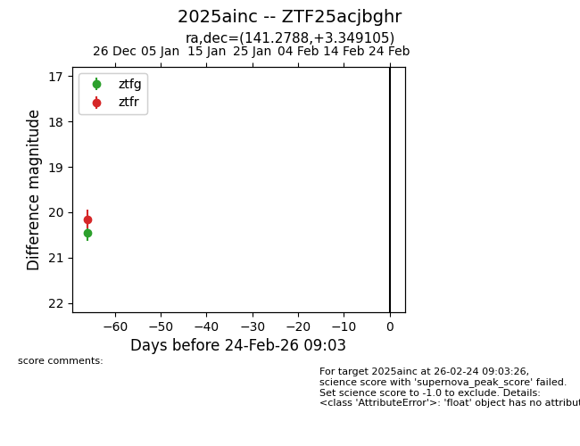
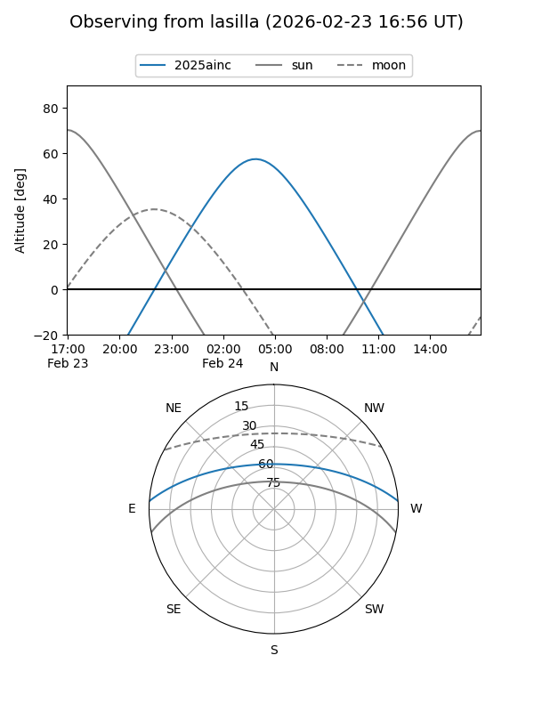
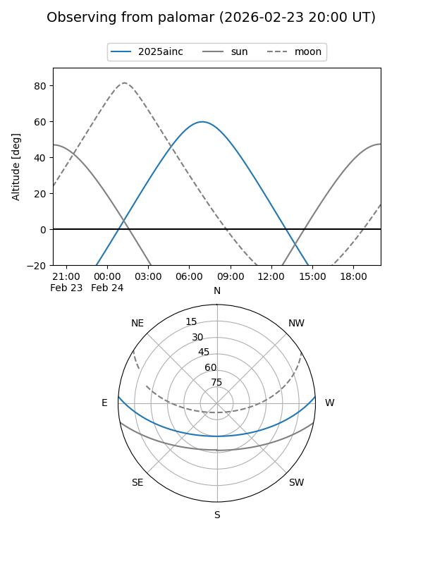

2025ainc
Target 2025ainc at 2025-12-27 18:02
Aliases and brokers:
FINK: fink-portal.org/ZTF25acjbghr
Lasair: lasair-ztf.lsst.ac.uk/objects/ZTF25acjbghr
ALeRCE: alerce.online/object/ZTF25acjbghr
TNS: wis-tns.org/object/2025ainc
YSE: ziggy.ucolick.org/yse/transient_detail/2025ainc
alt names
ZTF25acjbghr (ztf,fink_ztf)
2025ainc (tns,yse)
Coordinates:
equatorial (ra, dec) = 141.2788,+3.34910
equatorial (HMS+DMS) = 09:25:06.91,+03:20:56.78
galactic (l, b) = (229.3777,+35.36217)
Flags:
Photometry:
last ztfg=20.44, ztfr=20.15
1 ztfg, 1 ztfr detections
Lightcurve

Visibility


Additional plots